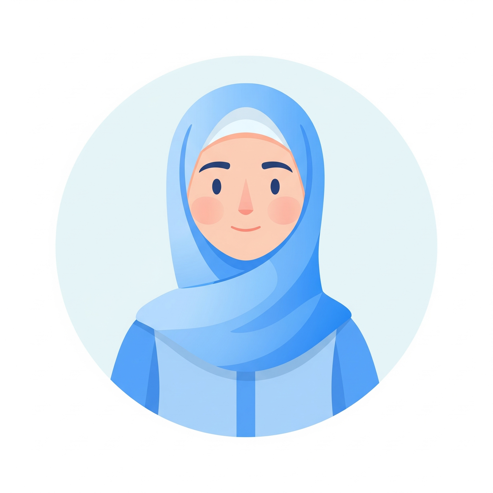

Visi Desa
“Mewujudkan Desa mandiri sebagai kawasan ekonomi kreatif terintegrasi menuju Desa sejahtera dan mandiri”.
Desa Mandiri dan Berkelanjutan di Kabupaten Sidrap
Desa Tanete merupakan salah satu desa yang terletak di Kecamatan Maritengngae, Kabupaten Sidenreng Rappang (Sidrap), Provinsi Sulawesi Selatan. Mayoritas penduduk Desa Tanete bermata pencaharian sebagai petani, peternak, dan pelaku usaha kecil. Secara administratif, desa ini dipimpin oleh seorang kepala desa dan terbagi ke dalam beberapa dusun yang masing-masing dikelola oleh kepala dusun. Desa Tanete juga telah dilengkapi dengan fasilitas dasar seperti kantor desa, sekolah, tempat ibadah, dan pos kesehatan desa (poskesdes).

Tanete memiliki lahan sawah produktif dengan hasil panen unggulan sepanjang tahun.

Sentra peternakan ayam petelur menjadi sumber ekonomi utama bagi warga desa.

Komitmen desa dalam mendukung tumbuh kembang anak melalui program kesehatan terpadu.
Berikut adalah lokasi geografis Desa Tanete, Kecamatan Maritengngae, Kabupaten Sidenreng Rappang.
Dahulunya Desa Tanete merupakan bagian dari distrik Allakuang yang berupa sebuah dusun yang mana sebagian besar wilayahnya digunakan sebagai lahan bercocok tanam. Namun akibat adanya bencana kebakaran yang terjadi di wilayah Allakuang (Induk distrik) maka sebagian besar masyarakat mengungsikan diri ke wilayah sekitar dusun Tanete kemudian bermukim dan menetap untuk dijadikan kampung Tanete. Nama Tanete diambil dari kata “Ketinggian” Artinya Tanete tidak akan tenggelam. Desa Tanete resmi berdiri setelah berpisah dengan Desa Allakuang pada tahun 1992 menjadi Desa definitif yang di tandai dengan pemilihan kepala desa secara langsung oleh masyarakat yang terdiri dari 3 Dusun yaitu Dusun I Tanete, Dusun II Tanete, dan Dusun III Tanete.

Kegiatan rutin membersihkan lingkungan bersama warga sebagai wujud gotong royong dan kepedulian sosial.

Pelayanan kesehatan ibu dan anak yang diadakan rutin setiap bulan untuk mencegah stunting dan meningkatkan gizi.

Momentum reflektif warga desa melalui pengajian dan kegiatan sosial dalam rangka tahun baru Islam.

Tradisi lokal dalam menyambut musim tanam yang sarat dengan nilai adat dan spiritualitas Bugis.

Tradisi pesta panen sebagai bentuk syukur atas hasil bumi dan solidaritas antarwarga desa.
Berikut adalah berbagai fasilitas umum yang tersedia di Desa Tanete untuk mendukung kesejahteraan warga.
2.950
Jumlah Penduduk
1.447
Laki-laki
1.503
Perempuan
929
Keluarga
PEMERINTAH DESA TANETE TAHUN ANGGARAN 2025
Kelompok: PAD, Transfer, Pendapatan Lain-lain
Bidang: Pemerintahan, Pembangunan, Pembinaan, Pemberdayaan, Tak Terduga
Kelompok: Penerimaan Pembiayaan (SiLPA) & Pengeluaran Pembiayaan
Sumber Data: Informasi statistik pendapatan dan realisasi anggaran ini berdasarkan dokumen resmi Anggaran Pendapatan dan Belanja Desa (APBDes) Tanete Tahun Anggaran 2025.
Data diperbarui secara berkala oleh Pemerintah Desa melalui Sistem Keuangan Desa (Siskeudes). Terakhir diperbarui: 15 April 2026.

Kepala Desa
H. Baharuddin, S.E.

Sekretaris Desa
Fatahullah, S.Ag.

Kepala Seksi Kesejahteraan
Muh. Ali Safii, S.Tr.Pt.

Kepala Seksi Pemerintahan
Hasnawati, S.Pd

Kepala Seksi Pelayanan
Nely Amalia

Kepala Urusan Umum
Wildayati, S.Pd.

Kepala Urusan Keuangan
Hariyadi, S.H

Staf Keuangan
Putri Reginatasya

Kepala Urusan Perencanaan
Nur Wahyu Hidayat, S.H

Staf Perencanaan
Nur Hikmah D

Ketua BPD
Drs. H. Rusli Made Aming

Wakil Ketua BPD
Drs. H. Burhanuddin
Sekretaris BPD
Drs. Hasan Kadir

Anggota
Hj. Rahmawati
Anggota
Syafruddin Karim
Anggota
H. Jamaluddin
Anggota
H. Muhammad Arif, S.Pd., M.Si.

Kepala Dusun I
Imran Tahir

Kepala Dusun II
Basri

Kepala Dusun III
Muh. Yusuf Yakub
Arah Pembangunan
Rencana kerja yang berakar pada potensi lokal, pelayanan publik, dan keberlanjutan.
“Mewujudkan Desa mandiri sebagai kawasan ekonomi kreatif terintegrasi menuju Desa sejahtera dan mandiri”.
Memajukan dan meningkatkan kinerja birokrasi Pemerintah Desa dalam memberikan pelayanan publik yang berkualitas, disiplin, dan profesional.
Memberdayakan masyarakat khususnya pemuda, menuju masyarakat maju, mandiri, dan sejahtera.
Menciptakan dan meningkatkan pembangunan infrastruktur.
Menjadikan desa bersinar sehingga meningkatkan keamanan dan ketentraman masyarakat.
Meningkatkan sistem usaha mandiri melalui program pengembangan Badan Usaha Milik Desa (BUMDesa).
Meningkatkan kualitas pendidikan khususnya usia dini (PAUD).